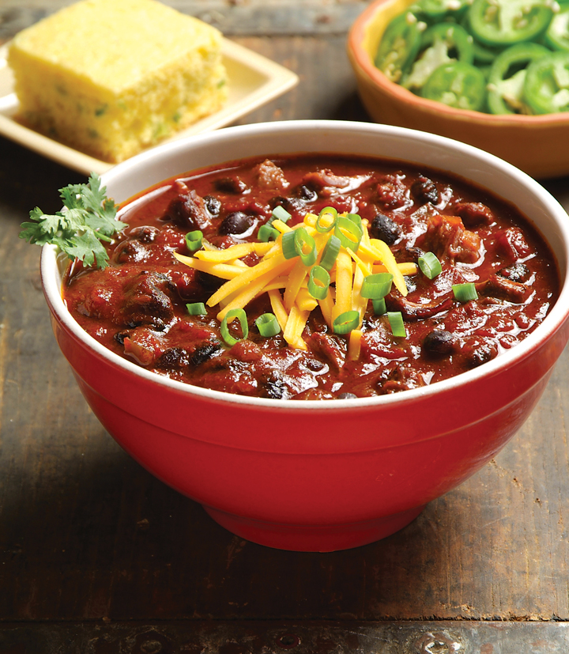

Lovis's favorite Chili con Carne (w Beans)!

Description
This is Lovis Chili con carne (and beans). It's a quick meal to feed a lot of hungry people.
Ingredients
- 500g Ground Beef
- 2 Onion - chopped
- 1 Can of chopped tomatoes
- 2 cans of red beans
- Salt and Pepper to taste
- 3 oz of chili spice mix
Steps
- In a large pan warm a trickle of olive oil. Add chopped onions and glaze for 3 minutes.
- Add ground beef, add salt and chili spice mix to the meat. Brown until the meat is cooked all the way.
- Add one tomato can to the meat. Let simmer for 15 minutes.
- Add more spices, salt and pepper to taste.
- Open bean cans. Pour beans into a strainer and rinse with cold water.
- 20 minutes before serving add the red beans and stir them in gently.
- The beans shouldn't cook, they should just warm up in the chili.
- Serve in bowls with sour cream and cheese.
Back to Recipes